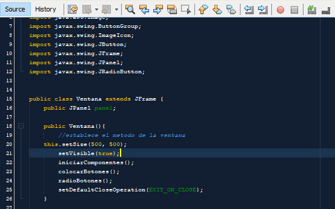
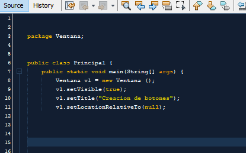
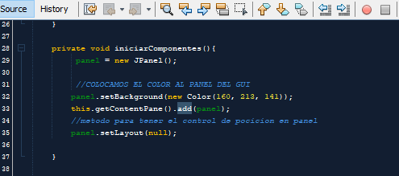
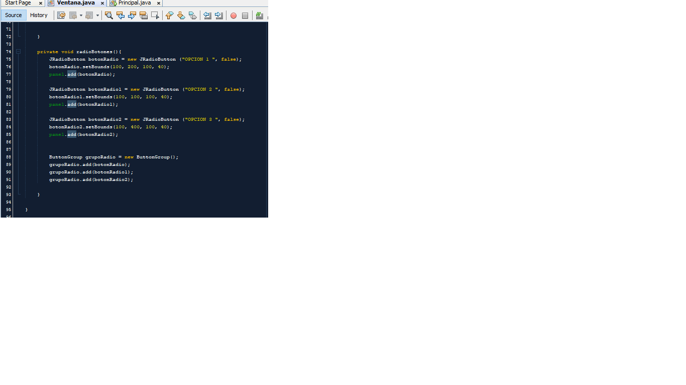
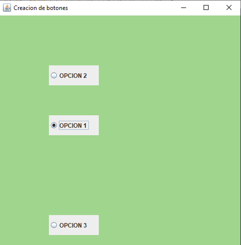

Conocido también como botón de opción o botón de radio es un tipo de widget utilizado en interfaces gráficas de usuario que permite elegir una sola opción de un conjunto predeterminado de estas. Los botones de opción (botones de radio) se llaman así en referencia a los botones físicos que se usan en los radios para seleccionar estaciones preajustadas - cuando se presionaba uno de los botones, otro de los botones saltaba. Es posible que, inicialmente, ninguno de los botones de opción en un grupo esté seleccionado. Este estado no puede restaurarse interactuando con el widget del botón de opción (pero es posible a través de otros elementos de la interfaz de usuario). Un aspecto interesante de los botones de opción, cuando se utilizan en un formulario HTML, es que si no se marca ningún botón en un grupo, entonces no se pasa ningún par nombre-valor cuando se envía el formulario. Por ejemplo, para un grupo de botones de opción llamado Sexo, con las opciones de Masculino y Femenino, la variable Sexo no pasaría, ni siquiera con un valor en blanco. Este es un ejemplo común de un RadioButton en donde sólo se permitirá seleccionar un elemento de la lista definida previamente por el Programador:
Lo primero que realizaremos es crear una clase llamada "Ventana" donde importaresmos el "extends JFrame" el cual es para crear la ventana donde iran nuestros botones al igual que las inicializaciones o llamadas de los metodos como darle accion al boton cerrar y que sea visible
Creamos la clase principal donde se inicializara el programa con la variable "v1" nstanciamos los metodos
el el metodo "inicializarComponentes" hay ira el codigo donde colorearemos el panel al igual que nos de libertad el loyout de mover los botones
creamos el metodo radioBotones con la libreria JRadioButton donde ponemos el nombre donde ira el nombre que contendra el radio boton y sus dimenciones y los vamos a agregar a panel
 